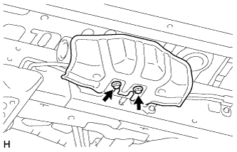
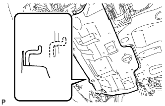
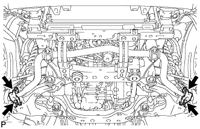

ПЕРЕДНИЙ СТАБИЛИЗАТОР ПОПЕРЕЧНОЙ УСТОЙЧИВОСТИ (для моделей с KDSS) > СНЯТИЕ |
| 1. СНИМИТЕ ПЕРЕДНЕЕ КОЛЕСО |
| 2. СНИМИТЕ ЛЕВЫЙ ПОРОГ В СБОРЕ (для 5-дверных моделей) |
Для моделей с подсветкой:
Отсоедините 2 разъема.
Выверните 6 болтов и снимите боковой порог.

| 3. СНИМИТЕ ЗАЩИТУ РАСПРЕДЕЛИТЕЛЯ СТАБИЛИЗАТОРА |
|  |
Выверните 2 болта и снимите защиту распределителя стабилизатора.
| 4. СЛЕЙТЕ ЖИДКОСТЬ ДЛЯ ТРАНСМИССИИ |
 |
Ослабьте прокачной штуцер на корпусе блока управления стабилизаторами с гидроаккумулятором в сборе и слейте жидкость для подвески.
Затяните прокачной штуцер.
| 5. СНИМИТЕ НИЖНЮЮ НАКЛАДКУ ПЕРЕДНЕГО БАМПЕРА |
Освободите фиксатор, выверните 5 болтов и снимите нижнюю облицовку переднего бампера.
| 6. СНИМИТЕ ЗАЩИТУ КАРТЕРА ДВИГАТЕЛЯ № 1 В СБОРЕ |
|  |
Выверните 4 болта.
Отсоедините защиту картера двигателя от кузова автомобиля, как показано на рисунке.
| 7. СНИМИТЕ СКОБУ ЭЛЕМЕНТА ПЕРЕДНЕЙ ПОДВЕСКИ В СБОРЕ |
 |
Выверните 6 болтов и снимите 2 скобы элемента подвески с передней рамы в сборе.
| 8. СНИМИТЕ КОНЦЕВОЙ КРОНШТЕЙН ПЕРЕДНЕГО СТАБИЛИЗАТОРА |
|  |
Выверните 4 болта и снимите 2 кронштейна с нижнего рычага.
| 9. СНИМИТЕ ШТАНГУ ПЕРЕДНЕГО СТАБИЛИЗАТОРА |
 |
Выверните 4 болта и снимите 2 нижних кронштейна переднего стабилизатора и штангу переднего стабилизатора.
Снимите 2 втулки стоек переднего стабилизатора и втулки нижних кронштейнов переднего стабилизатора со штанги переднего стабилизатора.
| 10. СНИМИТЕ УПЛОТНЕНИЕ ФАРТУКА ЛЕВОГО ПЕРЕДНЕГО КРЫЛА |
Снимите 7 фиксаторов и уплотнение фартука левого переднего крыла.
| 11. СНИМИТЕ КРОНШТЕЙН УПЛОТНЕНИЯ ФАРТУКА РАМЫ |
 |
Выверните болт и снимите кронштейн.
| 12. ОТСОЕДИНИТЕ РЕГУЛИРОВОЧНУЮ ТРУБКУ ПЕРЕДНЕГО СТАБИЛИЗАТОРА № 1 В СБОРЕ |
 |
С помощью разрезной головки отсоедините регулировочные трубки переднего стабилизатора.
Выверните болт.
| 13. СНИМИТЕ ЦИЛИНДР ПЕРЕДНЕГО СТАБИЛИЗАТОРА С ТРУБОПРОВОДОМ В СБОРЕ |
 |
Выверните болт и снимите гайку и цилиндр переднего стабилизатора с трубопроводом в сборе.
Снимите 2 колпачка прокачных штуцеров и прокачные штуцеры с цилиндра переднего стабилизатора с трубопроводом в сборе.
| 14. СНИМИТЕ ПРАВУЮ СТОЙКУ ПЕРЕДНЕГО СТАБИЛИЗАТОРА |
 |
Выверните болт и снимите дистанционную шайбу и стойку переднего стабилизатора в сборе.